Eksplorasi ilmu, pengalaman baru, dan cerita seru perjalanan di jenjang kelas XI.
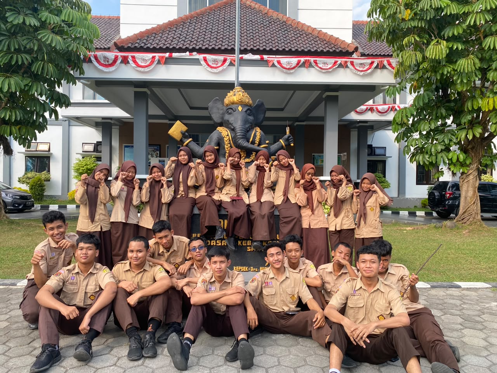
Dokumentasi #01Suasana belajar baru yang menyegarkan di luar kelas. Mengasah pemahaman sambil menikmati udara segar dan suasana sekolah yang asri.
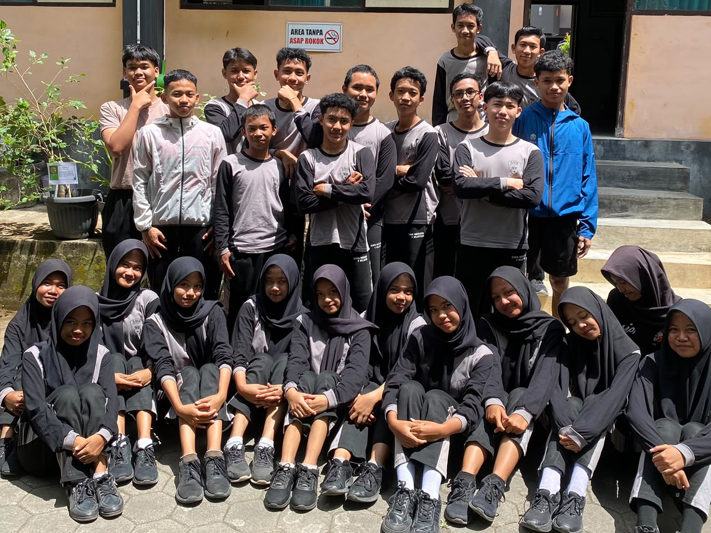
Dokumentasi #02Gotong royong dan bahu-membahu merapikan serta membersihkan lahan sekolah. Menjaga kebersihan bersama demi kenyamanan belajar.
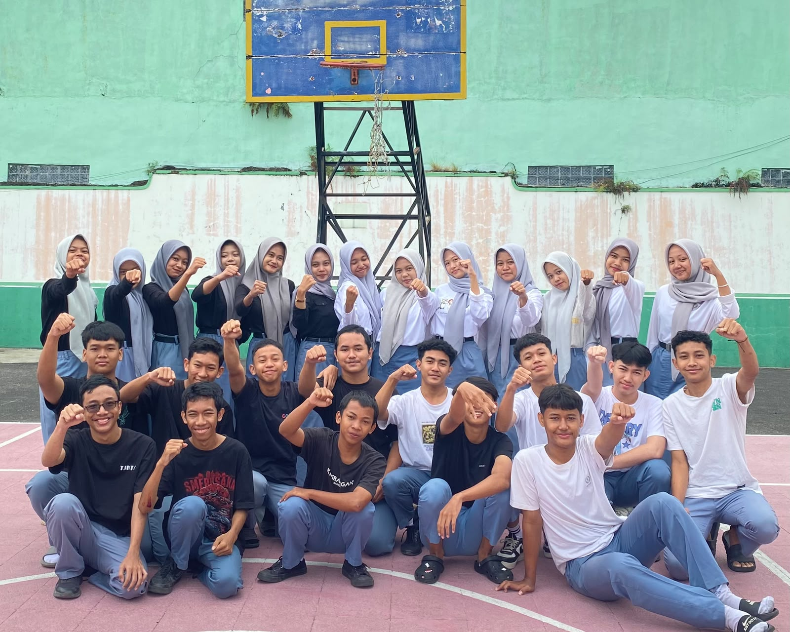
Dokumentasi #03Foto bersama penuh keceriaan saat merayakan hari ulang tahun sekolah. Momen kebersamaan yang selalu ditunggu-tunggu!
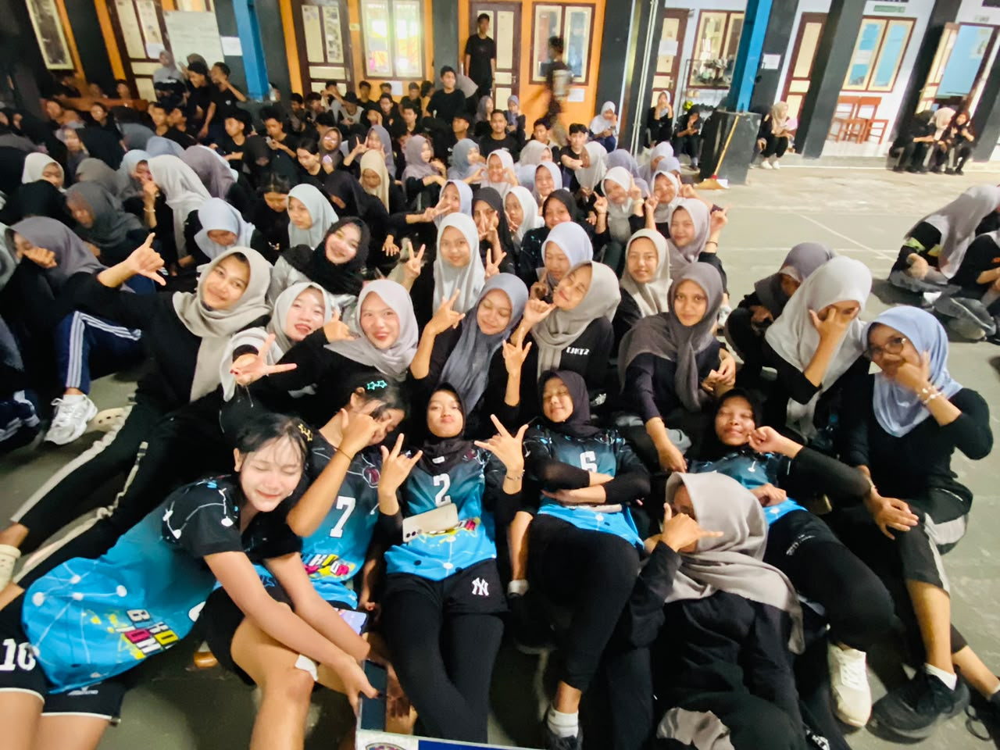
Dokumentasi #04Berpartisipasi aktif dalam peringatan HAORNAS bersama kelas lain. Bergerak bersama, membakar semangat, dan menjaga pola hidup sehat!
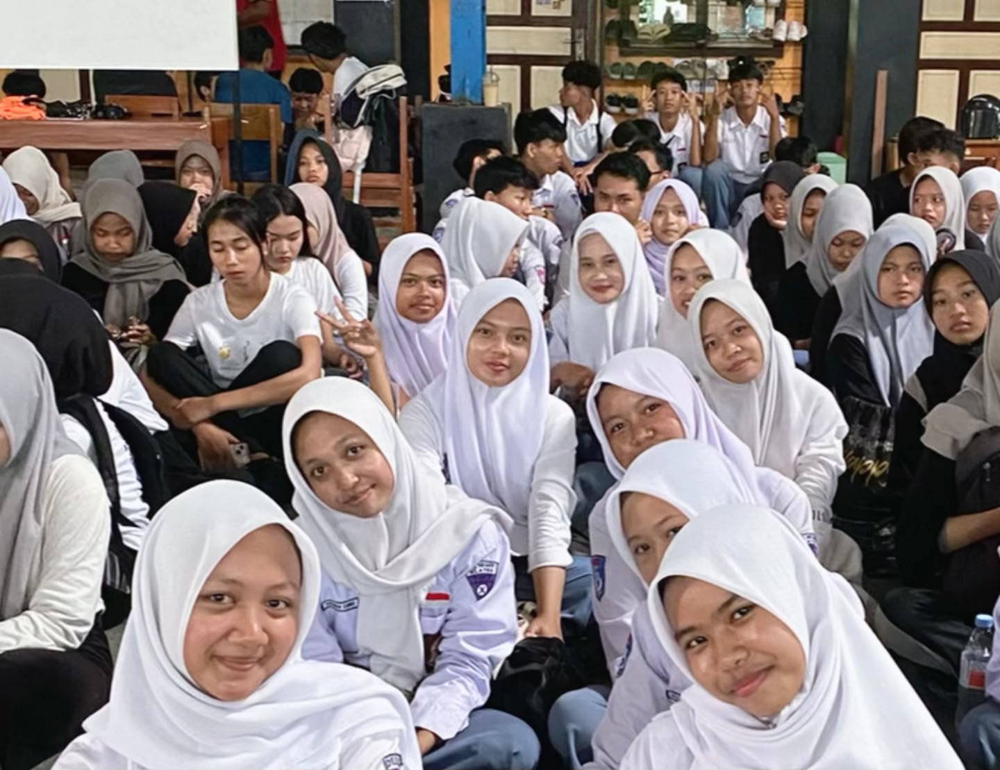
Dokumentasi #05Potret kebersamaan dan sportsivitas saat ajang classmeet. Menjalin keakraban sambil memberikan dukungan terbaik untuk kelas tercinta.
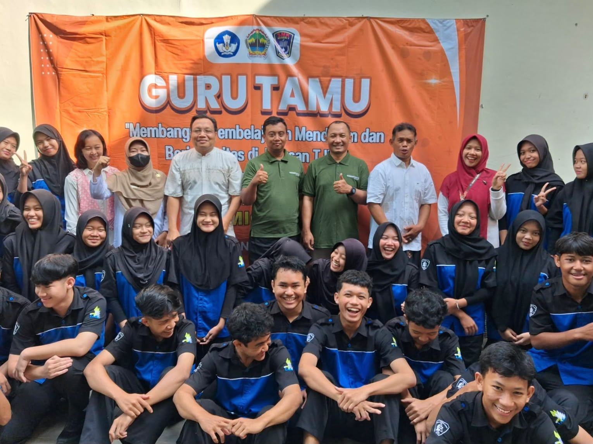
Dokumentasi #06Momen berharga menyerap ilmu, wawasan dunia industri, dan pengalaman langsung dari praktisi hebat yang hadir di kelas.
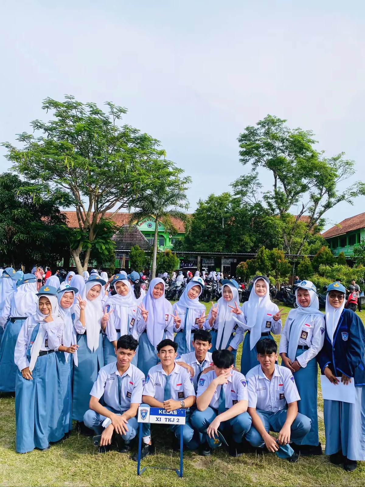
Dokumentasi #07Prosesi upacara bendera dilanjutkan dengan momen puncak hasil perjuangan belajar selama satu semester. Langkah kecil menuju masa depan!
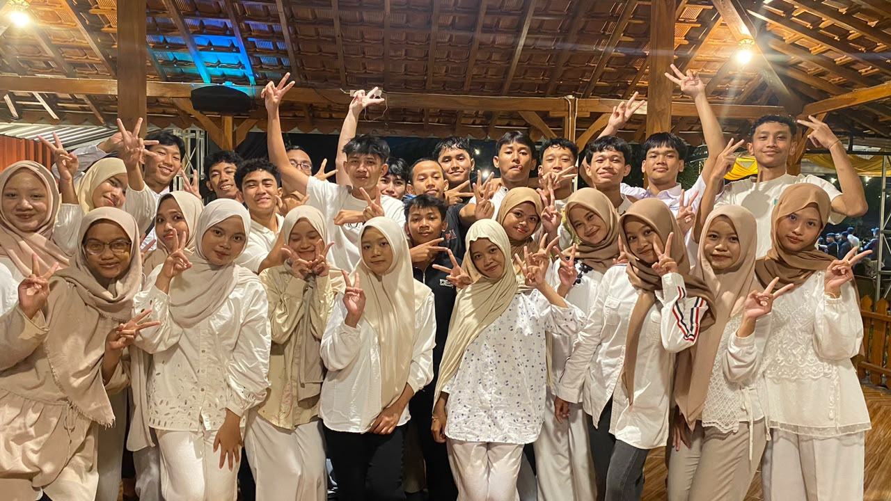
Dokumentasi #08Tradisi tahunan mempererat silaturahmi di bulan suci Ramadhan. Momen manis menikmati hidangan dan cerita hangat di luar jam sekolah.
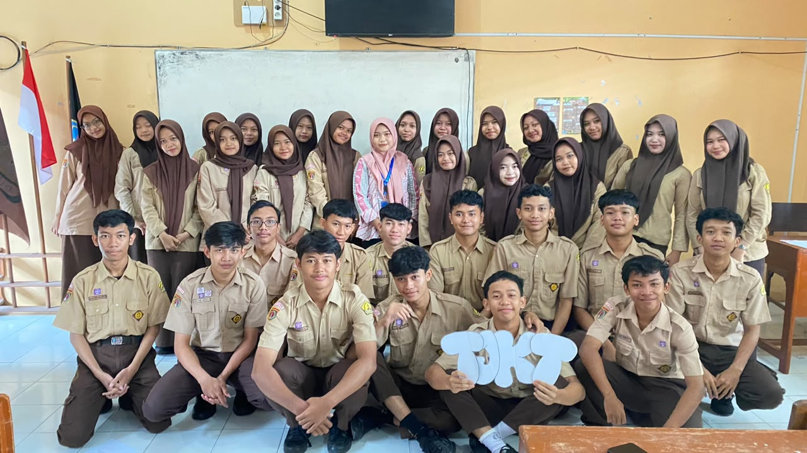
Dokumentasi #09Foto kenang-kenangan dan ungkapan terima kasih mendalam atas bimbingan serta kehangatan dari kakak-kakak mahasiswa PPG selama mengajar.
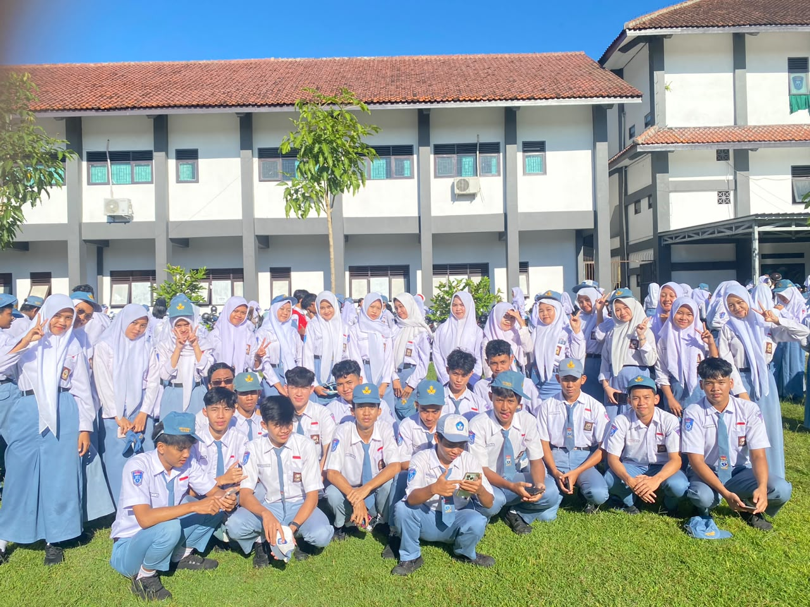
Dokumentasi #10Mengikuti upacara Hardiknas dengan rapi dan penuh khidmat. Mengingat kembali pentingnya semangat belajar dan menuntut ilmu.
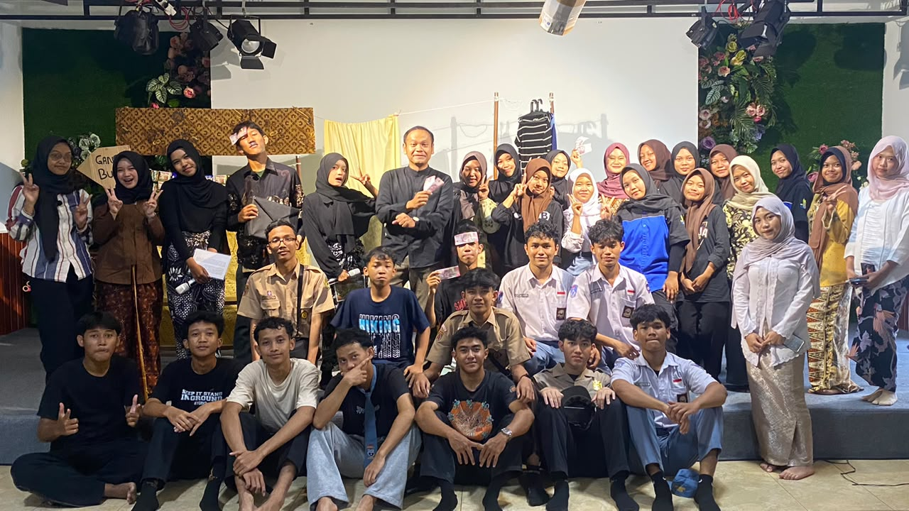
Dokumentasi #11Aksi panggung penuh totalitas, ekspresi, dan kerja sama tim dalam menampilkan lakon drama terbaik untuk tugas Bahasa Indonesia.
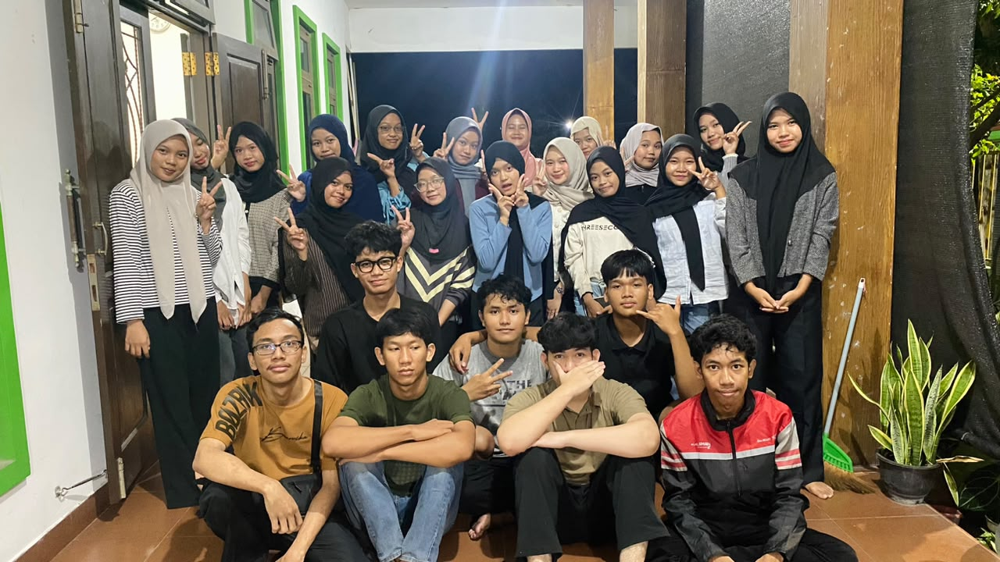
Dokumentasi #12Malam keakraban melepas penat ujian semester dengan gurauan, aroma bakaran lezat, dan kehangatan kebersamaan satu kelas!